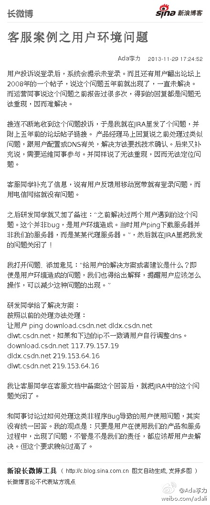

微博微信上都有这样的社交达人，出席各种活动和饭局。行为基本是换名片，做自我介绍，合影，然后匆匆赶往下一个场子，一晚上赶三个场子是常事。有人被称为“合影帝”。— 我一直在想，合影帝起到了什么作用? 连接不同圈子的hub?
敏捷系列第四篇。@育儿男人帮_毛豆爸爸:@极客头条 @Ada李力 @51CTO技术博客 @HQ洪浩 @IBM-爱T派的奇思妙想 @IT客 @AgilePilot 敏捷在业界成功了吗？ - 倚天屠龙记 - 博客频道 - CSDN.NET 网页链接
客服案例之用户环境问题： 用户投诉说登录后，系统会提示未登录。而且还有用户翻出论坛上2008年的一个帖子，说这个问题五年前就出现了，一直未解决。而运营同事说这个问题之前报告过很多次，得...文字版>> 网页链接 （新浪长微博>> 网页链接） 
有个刚毕业学生约见面说请教，结果一见面他就打开一个长长地问卷调查，请我给意见，还做出我边答他边记录的架势，看起来一个小时搞不完。问情况得知他刚在前一个调查中受挫，见面的教授对他说:“让你们的领导来找我谈” — 不忍，我还是配合地帮他做了调研，但也在想，该谁来教学生如何做事呢?
回复@黄小非:老板派了个他完全不懂的任务，他想到了用调研，思路不错。但做调研的方式，吃闭门羹也是必然的。有个最基本的问题他没想清楚，他要调研的人都很忙，为什么要帮你做这个调研？另外，约见面时的理由跟实际目的差异过大，更容易被拒绝。 //@黄小非:你应该让他自己把那份问卷做了，然后问问他@Ada李力:有个刚毕业学生约见面说请教，结果一见面他就打开一个长长地问卷调查，请我给意见，还做出我边答他边记录的架势，看起来一个小时搞不完。问情况得知他刚在前一个调查中受挫，见面的教授对他说:“让你们的领导来找我谈” — 不忍，我还是配合地帮他做了调研，但也在想，该谁来教学生如何做事呢?